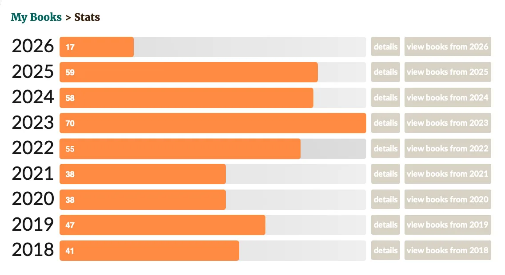
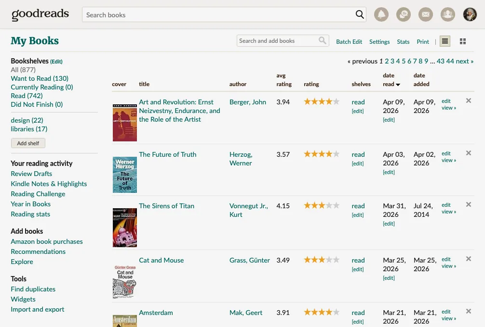
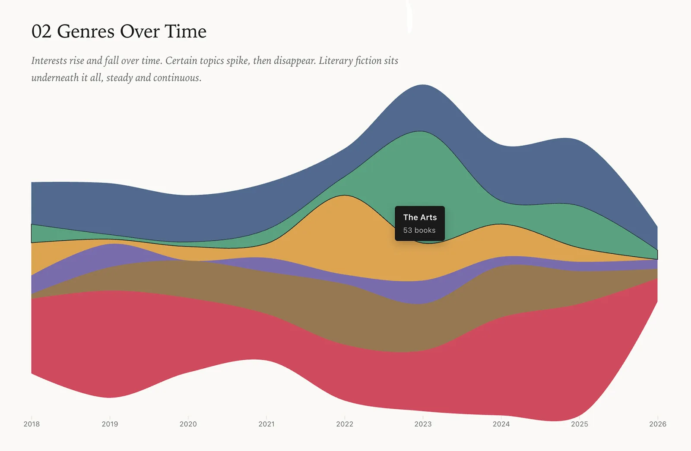

By the Books
Since 2018 I've kept a running log of the books I've read, in part to encourage myself (books are a sound outlet from our hyperconnected world), and as a way to track my curiosity over time. Eight years in, I found I had an interesting data set to explore and play with.

Annual Reading Challenges on Goodreads.
On its own, it doesn't say much. Titles, authors, dates. A record. The work here was to take the data and see what else might be in it if I looked at it from a few different angles.

Raw list of data from Goodreads.
The work was in matching each view to a clear question (example: do I read too many American authors?), and seeing if a data visualisation can help answer the question.
Some compare things side by side. Some track how themes build and fade over time. One reconstructs a virtual shelf from the data that provides a sense of scale. Others bring forward the interests that a simple list tends to bury. There are six in total, each doing something the others don’t.

One of the six visualisations, showing how particular genres ebb and flow over time.
The visuals trace themes, where authors come from, the ideas that keep resurfacing, and the patterns that build over time. Some are obvious. Others only show up once you step back.
See it at edwardblake.net/reads